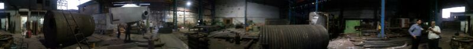

Properly maintaining your boiler can save you money and keep your home safe.Boiler maintenance is actually fairly easy because modern Boilers are fairly foolproof devices that don’t require much attention.
Inspect Your Boiler Every Year
If you don’t run your boiler during the warm weather months you should inspect it before the heating season. The best time to do this is usually in September or October depending on when it gets cold in your area. The inspection doesn’t have to be that intense or serious all you really have to do is look at the boiler.
Make sure there are no cracks or damage and that no water is leaking from the boiler. This shouldn’t be too hard all you’ll have to do is take a close look at the boiler, if it is kept in a dark basement you may have to use a flashlight.
Once this is done you should turn the boiler on and fire it up. Then you should watch the boiler in operation. You have to do this in order to check for leaks and other problems. Make sure no water is leaking from the boiler if it is a hot water Boiler and no steam is escaping from the boiler.If you see any sort of crack or leak in the boiler shut it down and call a maintenance technician immediately. Never run a boiler with a crack or leak in it.
Boiler Pressure
There should be a pressure gauge on your boiler check this when you start the boiler for the season. Also take a look at it at least once every month whenever the boiler is in operation. Your boiler manual should tell you what the pressure should be if the boiler pressure is different you may need boiler maintenance. It is a good idea to check your boiler every month when it is in operation. All you’ll need to do is check the pressure and look at the boiler itself. Look for leaks, and damage just like you would when you check the boiler in the fall. If you see any leaks, damage or cracks, shut the boiler down and call for maintenance.
Keep the Boiler Clear
Always keep the area around the boiler clear when it is in operation. Never store anything that could melt or catch fire close to the boiler because of the fire hazard. Make sure furniture, papers, appliances, paint, aerosol cans, gasoline and other such items are kept as far back from the boiler as possible. You should keep the boiler clear so you can get a good look at it when you’re inspecting it. In particular you should be able to get to the gauge and the pilot light. You’ll want to be able to get to the boiler quickly in case there is an emergency.
Have the Boiler Serviced
It is always a good idea to have the boiler serviced by a licensed technician every year or so. Many people do this in the fall right before heating season. Something to remember is that you can have the boiler serviced anytime of the year. It can often hard to get Boiler technicians in the fall because that is their busy season. So it might be better to have the technician to come later in the season or during the summer.
